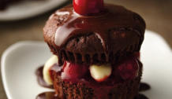

       <div class="view view-main">
        <!-- Initial Page, "data-name" contains page name -->
        <div data-name="cupcake" class="page">

          <!-- Scrollable page content -->
          <div class="page-content arco_nm">

            <!-- Link to another page -->
            <div class="navbar">
               <div class="navbar">
              <a href="/postres/" class="link back"><i class="back fas fa-arrow-circle-left"></i></a>
          </div>
          </div>
         <div class="titulo_estrellas">
          <h2>Cupcake de chocolate</h2>
        <div class="estrella_2">
           <i class="star fas fa-star"></i>
            <i class="star fas fa-star"></i>
            <i class="star fas fa-star"></i>
            <i class="star fas fa-star"></i>
            <i class="star far fa-star"></i>
            <p>200 votos</p>
            </div>
    </div>
         <div class="foto_info_nm">
             
             <ul class="info_nm">
                 <li><i class="far fa-clock"></i>1h 50min</li>
                 <li>Ingredientes:6</li>
                 <li>Porciones:24</li>
             </ul>
         </div>
         <a href="#" id="tn"><div class="boton_tablanutricional"><p id="tabla">Tabla nutricional</p>

         </div></a>
         <div class="ingredientes_nm">
             <h3>Ingredientes</h3>
               <ul>
                 <li><i class="ciro far fa-circle"></i>Caja de mezcla para pastel como:devil`s food SuperMoist Betty Crocker. El agua, aceite vegetal y los huevos necesarios según se indica en la caja</li>
                 <li><i class="ciro far fa-circle"></i>1/2 cucharadita de extracto de almendra, si lo deseas</li>
                 <li><i class="ciro far fa-circle"></i>Lata (21oz) de relleno para pastel o pie de cerezas</li>
                 <li><i class="ciro far fa-circle"></i>Envases (4 oz cada uno) de pudin de vainilla</li>
                 <li><i class="ciro far fa-circle"></i>Envase de frosting de chocolate Rich y Creamy de Betty Crocker</li>
             </ul>
         </div>
         <div class="preparacion_nm">
                <h3>Preparación</h3>
                <ol>
                 <li>Precalienta el horno a 350ºF. Prepara y hornea la mezcla para pastel según las indicaciones de la caja para 24 cupcakes, y agrega el extracto de almendras a la masa.</li>
                 <li>Deja enfriar en la bandeja 10 minutos; retira los cupcakes de la bandeja y colócalos en rejillas para enfriar. Enfía por completo, alrededor de 30 minutos.</li>
                 <li>Justo antes de servir, retira los moldes para hornear de papel. Corta cada cupcake por la mitad horizontalmente con cuchillo de sierra. En la mitad inferior del cupcake, coloca una cucharada de relleno para pastel de cerezas; cubre con 2 cucharadas de pudin de vainilla. Vuelve a colocar la tapa de arriba de cupcake.</li>
                 <li>Con una cuchara, cierte el frosting en un tazón pequeño para microondas. Calienta en el microondas sin tapar 30 segundo a intensidad alta. Remueve bien hasta obtener una preparación blanda y homogénea, y calienta entre 5 y 15 segundos más en el microondas si es necesario. Coloca 1 cucharada de frosting sobre el cupcake. Cubre con 1 cereza de relleno de cerezas</li>
                 <li>Repite los pasos 3 y 4 con los cupcakes restantes. Sirve de inmediato</li>
            </ol>

         </div>
         <div class="home_nm">
             <a href="/inicio/" class="home_nm link"></a>
         </div>
         <div class="califica_nm">
             <p>¿Qué tanto te gustó esta receta?</p>
             <form>
  <p class="clasificacion">
    <input id="radio1" type="radio" name="estrellas" value="5"><!--
    --><label for="radio1">★</label><!--
    --><input id="radio2" type="radio" name="estrellas" value="4"><!--
    --><label for="radio2">★</label><!--
    --><input id="radio3" type="radio" name="estrellas" value="3"><!--
    --><label for="radio3">★</label><!--
    --><input id="radio4" type="radio" name="estrellas" value="2"><!--
    --><label for="radio4">★</label><!--
    --><input id="radio5" type="radio" name="estrellas" value="1"><!--
    --><label for="radio5">★</label>
  </p>
</form>
         </div>
          </div>
        </div>
      </div>
